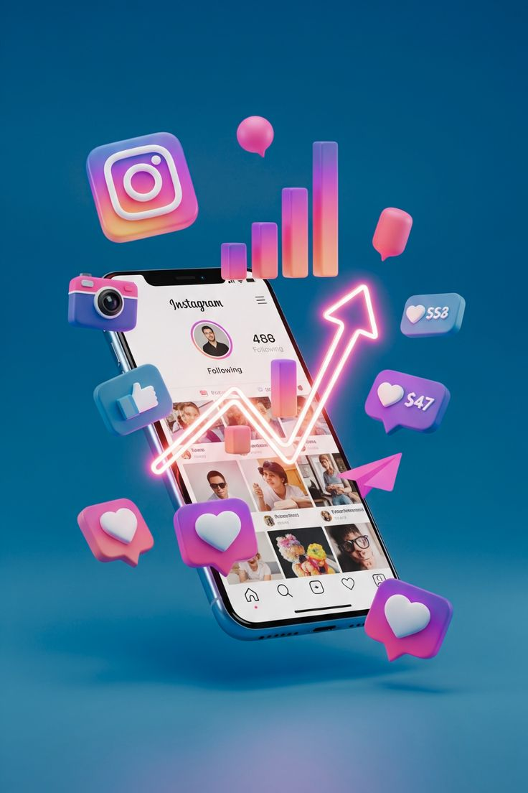

Publicar no es tener estrategia: cómo definir un rumbo digital real
Entendé por qué una buena presencia online no se trata de estar en todas partes, sino de tener una dirección clara.
Leer más →Explora contenido sobre marketing digital, estrategia y gestión de redes sociales
Cómo planificar estrategias de redes. Cómo entender objetivos, audiencias y métricas. Diferencias entre publicar y comunicar con intención.

Entendé por qué una buena presencia online no se trata de estar en todas partes, sino de tener una dirección clara.
Leer más →
Cómo evitar el error más común en redes: producir sin propósito. Guía práctica para alinear objetivos y acciones.
Leer más →Aprendé a distinguir métricas que sirven para crecer de las que solo inflan el ego digital.
Leer más →Cómo crear calendarios de contenido. Métricas que importan. Automatización, gestión de comunidades y herramientas.

Por qué entender a la audiencia importa más que seguir modas o tendencias.
Leer más →
Herramientas y consejos para crear un calendario flexible que respire estrategia y creatividad.
Leer más →
Claves para convertir interacciones en vínculos reales con tus seguidores.
Leer más →Cómo mantener coherencia visual sin ser diseñador. Colores, tipografías y tono visual de marca.
Guía práctica para mantener una imagen de marca profesional usando herramientas accesibles.
Leer más →Cómo los elementos visuales refuerzan tu mensaje y definen tu personalidad digital.
Leer más →
Por qué la estética no reemplaza la estrategia, pero sí puede potenciarla.
Leer más →Cómo crear contenido que conecte. Storytelling aplicado a redes. Errores de comunicación que hacen perder engagement.

Cómo transformar contenido en confianza y confianza en conversión.
Leer más →
Los fallos más comunes que hacen perder conexión con tu audiencia.
Leer más →
Estrategias para generar impacto real con recursos simples y una buena historia.
Leer más →